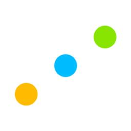
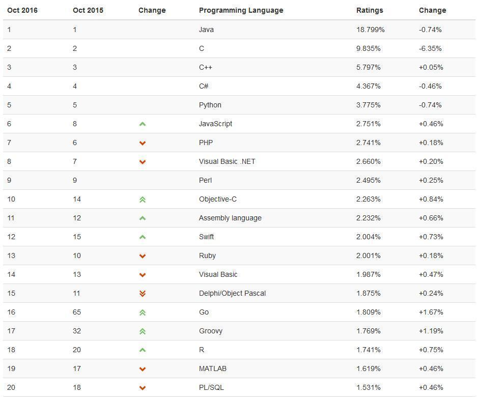
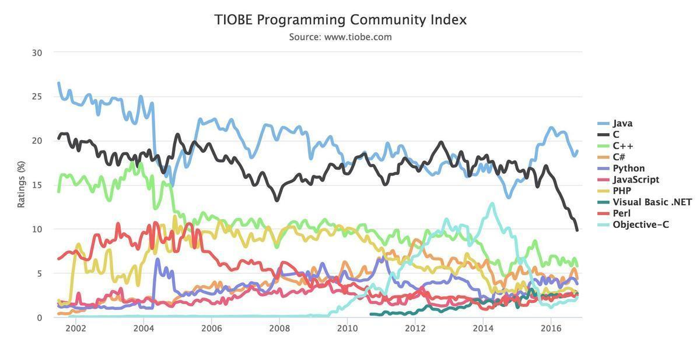
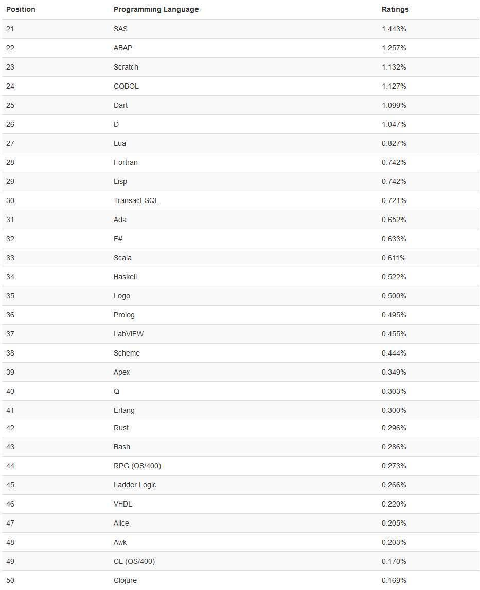
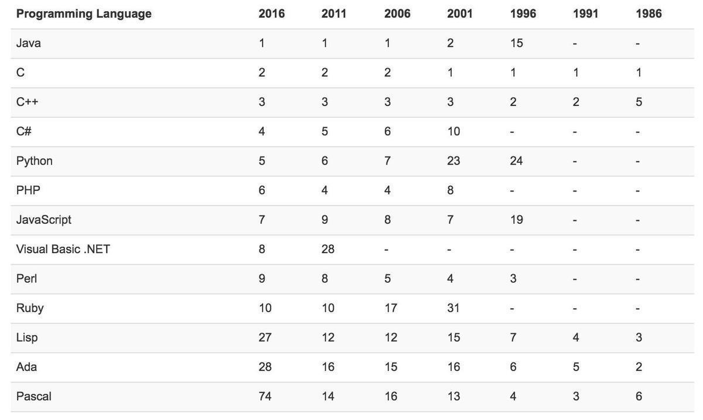
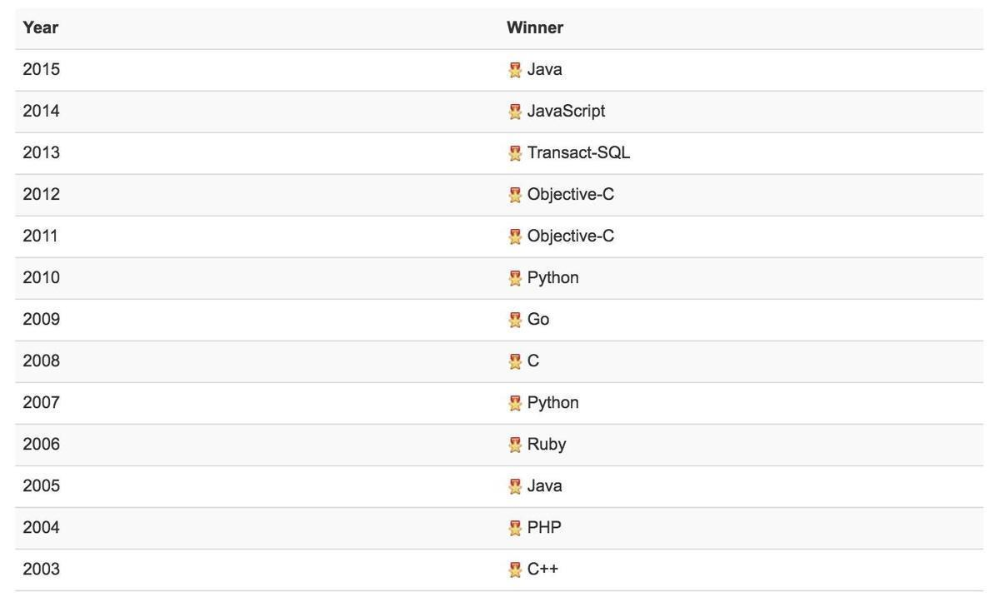

TIOBE 10月编程语言排行榜 : GO 问鼎本年度语言 ?


距离2016年度编程语言的公布只剩3个月了，谁将夺得桂冠？
与去年同期相比，2016年只有Go语言和Groovy语言的增长率超过了1%。 需要注意的是，Groovy语言2015年以一个爆炸性增长的收尾，所以到2017年1月左右的增长速度可能不会太快。谷歌的Go语言似乎是无可匹敌的，其中因Go语言编写的Docker容器的普及，也可能起到了一定的提升作用。
其他候选的，如Objective-C、Swift 和R，虽然都有接近1％的年增长率，但应该还达不到年度的标准。特别是Objective-C，从2014年4月的12.875%下跌到2016年1月的1.074%，不过目前有在回升。
10月编程语言排行榜 TOP20 榜单

Top 10编程语言TIOBE指数走势（2002-2016）

其它榜单
第20-50名如下，可能存在遗漏的情况：

第50-100名如下，由于差异较小，仅列出名称（按照首字母排序）：
(Visual) FoxPro, 4th Dimension/4D, ABC, ActionScript, APL, AutoLISP, bc, BlitzMax, Bourne shell, C shell, CFML, cg, Common Lisp, Crystal, Eiffel, Elixir, Elm, Forth, Hack, Icon, IDL, Inform, Io, J, Julia, Korn shell, Kotlin, Maple, ML, MQL4, MS-DOS batch, NATURAL, NXT-G, OCaml, OpenCL, Oz, Pascal, PL/I, PowerShell, REXX, S, Simulink, Smalltalk, SPARK, SPSS, Standard ML, Stata, Tcl, VBScript, Verilog
历史排名(1986-2016)
需注意的是，以下排名位次取决于12个月的平均值。

年度编程语言（2003-2015）
每一年的年度编程语言汇总

信息部 张凤乔